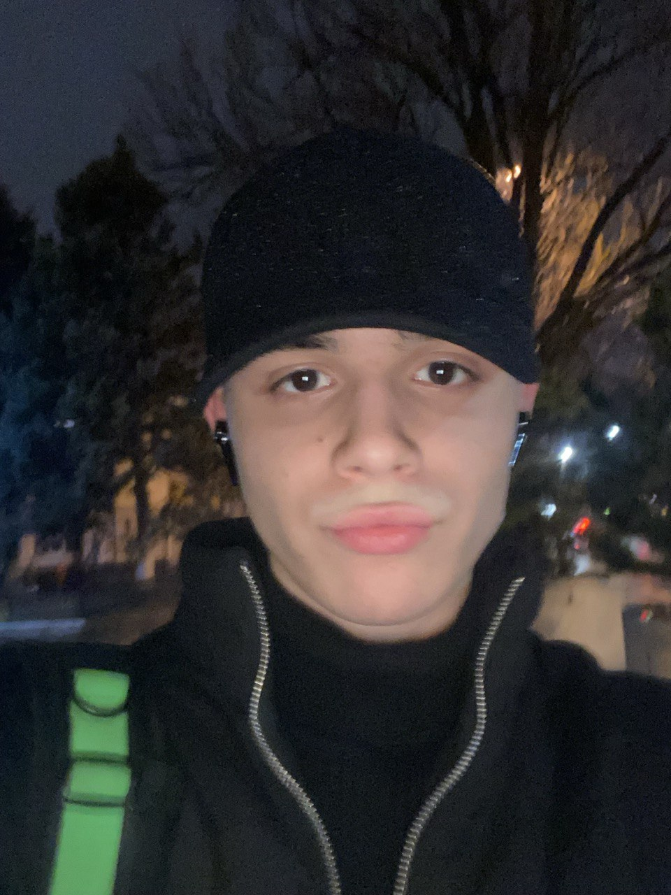

Люблю смешивать психологию людей, деньги и игру, нравится не сам момент выигрыша, а момент прочитывания соперника.
Тут не о чем говорить, профессионально занимался шахматами с 5 лет, бросил в 12 и до сих пор мне нравится играть.
Совсем недавно открыл для себя данный вид спорта. Особенно весь его кайф раскрывается при встрече с друзьями, и желательно чтобы рядом баня была.
Мне нравится скорость, высокая скорость, может однажды сяду за руль болида формулы 1, но пока довольствуюсь только картингом и то не часто, дорогое удовольствие.
